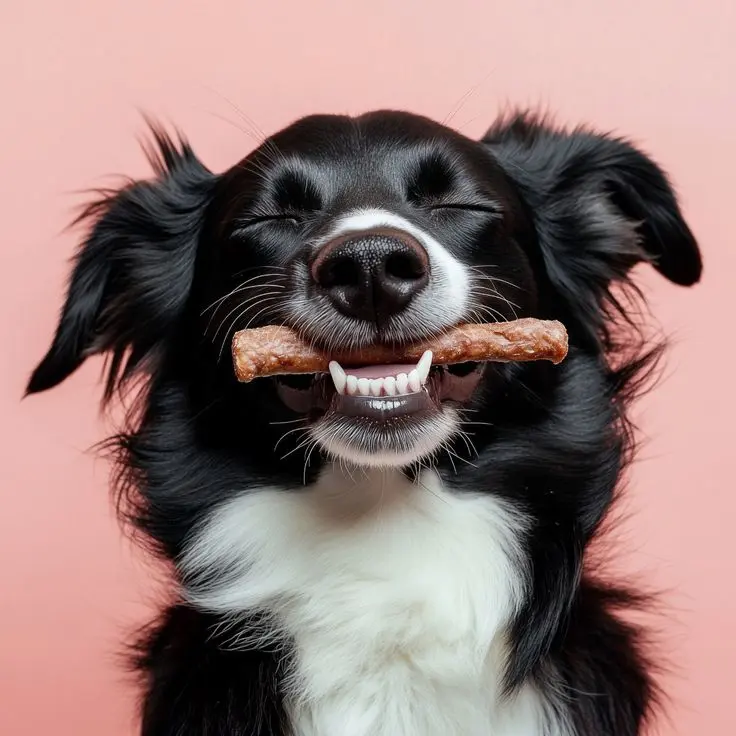

La salud de tu Mascota ,es nuestra prioridad.
Nuestros Vetes
En Veterinaria La Mary, nos dedicamos a brindar atención médica de calidad y cuidado integral para tu compañero peludo. Nuestro equipo de profesionales apasionados está comprometido con la salud y el bienestar de tu mascota.
Te ofrecemos
INTERNACIÓN

Monitoreo profesional y cuidado médico continuo en un entorno cómodo y equipado para la recuperación de tu mascota.
CIRUGÍAS

Quirófano de alta complejidad con tecnología adaptada para realizar intervenciones seguras y de baja invasión.
CASTRACIONES

Procedimientos preventivos para el control poblacional que favorecen la salud y la calidad de vida a largo plazo.
VACUNACIONES

Planes de inmunización personalizados para proteger a tu mascota frente a enfermedades en cada etapa de su vida.
ADOPCIONES Y CUIDADOS

Promovemos la tenencia responsable conectando animales rescatados con familias dispuestas a brindarles amor.
ALIMENTACIÓN SALUDABLE

Asesoramiento nutricional y planes de alimentación balanceados, adaptados a las necesidades específicas de cada etapa y condición de tu mascota.